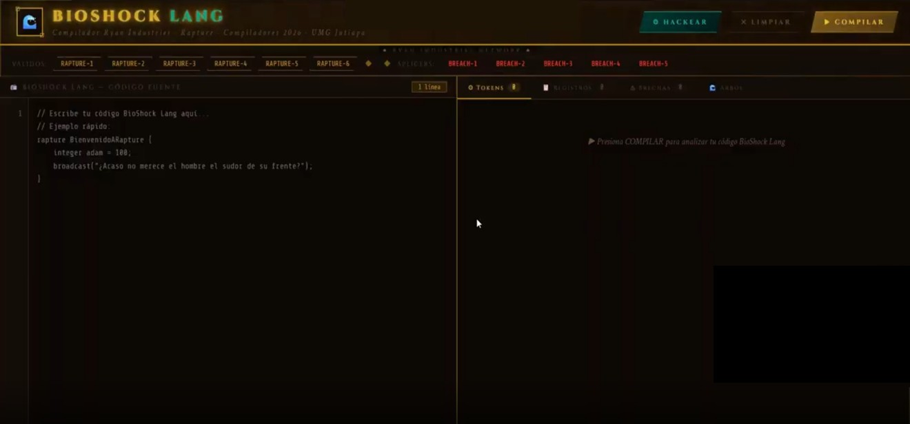
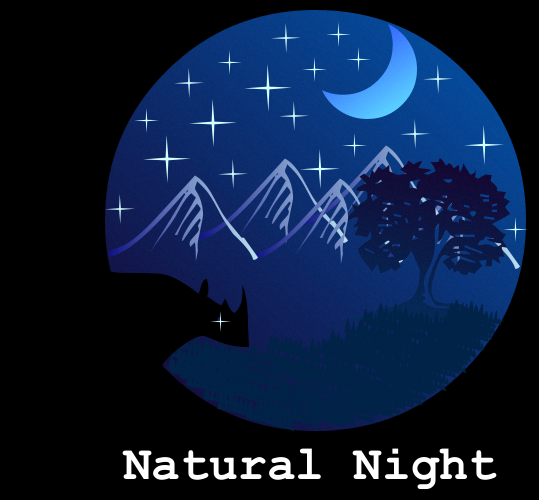

Sobre mí
Soy estudiante de Ingeniería en Sistemas de Información y Ciencias de la Computación en la Universidad Mariano Gálvez de Guatemala, sede Jutiapa. Mi interés académico esta en el sistemas de redes y el control de ciberseguridad. Aunque ahora estoy en el proceso de aprender el desarrollo de programación y la verdad me ha gustado mucho, en lo poco que llevo aprendiendo.
Actualmente combino mis estudios con lo que estoy aprendiendo en el desarrollo de mis practicas profesionales. El cambio ha sido bastante grande, pero mi meta es aprender todo lo que pueda y obtener toda la experiencia necesaria como profesional en el área de sistemas.
Me considero alguien callado y reservado, pero bastante sociable cuando agarró confianza con las personas. Mis pasatiempo es aprender dibujo, jugar videojuegos y hacer tareas mientras escucho música.
Habilidades e intereses
- Redes y ciberseguridad Interés académico
- Programación En aprendizaje
- Soporte técnico Diagnóstico y mantenimiento
- Ofimática Microsoft Office / Workspace
- Inglés Nivel B2
Tecnologías y herramientas
Proyectos y pasatiempos

Mini-compilador
Compilador desarrollado en Python con IDE web, resaltado de sintaxis y árbol de derivación visual.
Ver en GitHub
Dibujo de Super Mario
Primer intento de dibujo a mano alzada de un personaje de Super Mario.

Dibujo logo personal
Practica de dibujo minimalista para crear un logo único.